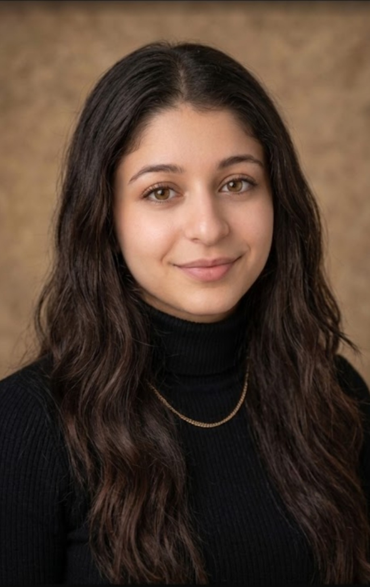

Développement d'applications - BTS SIO Option SLAM
Originaire de Bordeaux , j’ai obtenu un baccalauréat général avec les spécialités Sciences Économiques et Sociales (SES) , Histoire-Géographie , Géopolitique et Sciences Politiques (HGGSP) ainsi que Sciences de la Vie et de la Terre (SVT) . Ce parcours m’a permis de développer mon esprit d’analyse , ma curiosité et ma compréhension des enjeux économiques , sociétaux et technologiques actuels . À cette époque , je n’avais pas encore défini avec certitude mon projet professionnel . Après avoir effectué de nombreuses recherches sur différents secteurs d’activité et leurs perspectives d’évolution, je me suis progressivement orientée vers l’informatique . Ce domaine a retenu mon attention en raison de son importance croissante dans notre quotidien , de la diversité des opportunités qu’il offre et des défis intellectuels qu’il représente . J’ai particulièrement apprécié l’idée de pouvoir concevoir des solutions concrètes , résoudre des problématiques complexes et évoluer dans un environnement où l’apprentissage est permanent . Aujourd’hui , je suis étudiante en BTS Services Informatiques aux Organisations (SIO) , option Solutions Logicielles et Applications Métiers (SLAM) . Cette formation me permet d’acquérir des compétences solides en conception , développement , maintenance et sécurisation d’applications tout en renforçant ma rigueur , mon autonomie et ma capacité à travailler sur des projets techniques . Mon objectif est de poursuivre mes études afin de devenir ingénieure spécialisée en cybersécurité . Je m’intéresse particulièrement aux enjeux liés à la sécurisation des systèmes d’intelligence artificielle , un domaine qui prendra une place de plus en plus importante dans les années à venir . Je souhaite également explorer les possibilités offertes par l’intelligence artificielle pour renforcer la cybersécurité , notamment dans la détection des menaces , la prévention des attaques et la protection des infrastructures numériques .
Baccalauréat Général
Année de césure - Voyage à l'étranger
BTS SIO Option SLAM
Stage Analyste SI - DSI Cevital
Le BTS SIO (Services Informatiques aux Organisations) a été mis en place en 2011 pour remplacer l’ancien BTS Informatique de Gestion et mieux répondre aux besoins actuels des entreprises dans le domaine du numérique. Cette formation se divise en deux options : SISR et SLAM. L’option SLAM (Solutions Logicielles et Applications Métiers) est celle qui se concentre sur le développement informatique. Elle forme à la création d’applications, de sites web et de logiciels adaptés aux besoins d’une organisation, depuis l’analyse du besoin jusqu’à la mise en place et la maintenance. Concrètement, SLAM permet d’apprendre à programmer, gérer des bases de données et concevoir des solutions logicielles fonctionnelles, tout en intégrant des notions de travail en équipe et de cybersécurité.
À long terme, je souhaite devenir ingénieure en sécurité, et si possible de l’intelligence artificielle. Ce métier consiste à protéger les systèmes d’IA contre les attaques et les usages malveillants tout en garantissant leur fiabilité et leur bon fonctionnement. Il s’agit également de développer des solutions capables de détecter, anticiper et limiter les risques liés à ces technologies qui prennent une place de plus en plus importante dans de nombreux secteurs.
Voir ma carte heuristiqueDéveloppement d’une plateforme interne de gestion documentaire au sein de la DSI de Cevital.
Le projet permet de centraliser les documents et d’améliorer la gestion de l’information en entreprise.
Suivi des évolutions de l’intelligence artificielle et ses applications dans le développement logiciel et la cybersécurité.
Suivi des vulnérabilités, des nouvelles menaces informatiques et des bonnes pratiques de développement sécurisé.